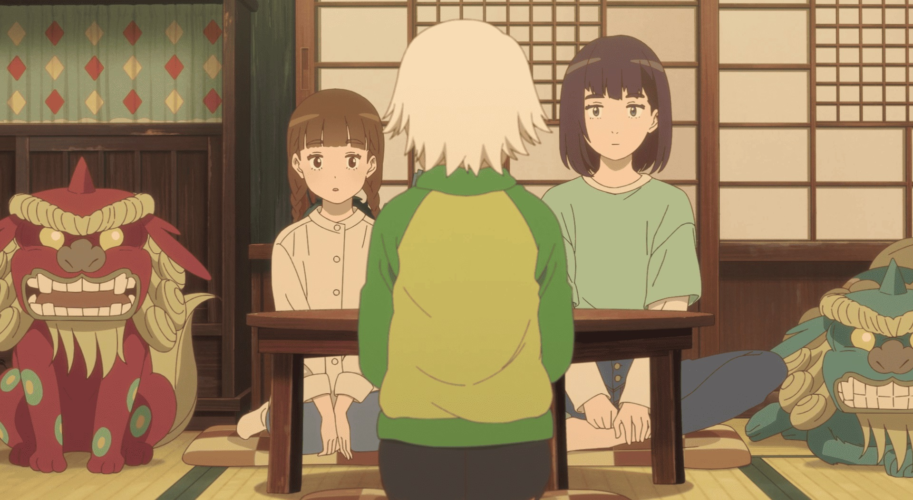

I put off watching "The House of the Lost on the Cape" for some time, an anime film based on a novel of the same name. I blame poor marketing. The English title is dull and generic, only giving me some personal interest for the image of the cliffs of the Canadian Maritime provinces by the sea. There were little in the way of trailers, and promotional art (including the American Bluray cover) focused on the plain human character designs, barely hinting at the fantastical aspects of the title House or the friendly monsters that appear. The movie itself doesn't offer much opportunity for better sources without spoilers. This is a shame since it is a good movie with an interesting perspective, and it might be better for viewers to trust in it and go in blind.The early moments of the film reveal the situation that brings the three main characters together. One is a teenage girl named Yui, a runaway from an abusive single-parent father and high-school dropout, who ends up in an emergency shelter after a local tsunami wrecks the town. The second is a younger girl, Hiyori, who is unable to speak after a tragic accident took her parents, and the tsunami leaves her without guardians or a home. The third is the elderly Kiwa, a grandmotherly-type of person, who finds the kids at the shelter and tells the volunteers "they're with me," offering a home to two strangers. Yui in particular is skeptical, but after a long walk on the other end of town, through a forest and towards the sea, they arrive to a small, rundown house. But inside, it's well-kept and comfortable, and seems to have everything the three need. In fact, new things they need seem to magically appear... and strange noises come from its walls...Spoilers aren't a big issue for this type of movie, but I'll try to avoid most of them. Kiwa turns out to have more to her than meets the eye, and through her friendships, the house eventually gets visitors in the form of various yokai monsters (friendly ones!). Near the end, there's a big climatic event. I was impressed with the filmmakers' restraint to take its time in revealing these fantastical elements, including the house at the center of it all - the full extent of the magic isn't in play until the second half of the movie. But the slow buildup to this feels entirely natural, not slow. Importantly, the fantasy is only a atmosphere and setting choice to the real purpose of the story: the human element. The two girls have tragic backstories they need to overcome, and this outreach from a stranger gives them a chance to be happy and have a family, if they let it. Their characters have just enough complexity to elevate this above the typical family movie. Kiwa by comparison is flawless to a fault, and serves only to give the girls a path to that happy ending... more could have been given to her, especially with the depth of history hinted at with the town and the house, but this is a minor quibble.  It's the human core, and perhaps the genuine kindness that comes from Kiwa and all the other characters, that makes the movie so pleasant to take in. There's no real mean-spiritedness in most of the movie, perhaps with the exception of Yui's father (whose outbursts are effective but tame enough to allow young kids to watch the film). Beyond this, the movie is somewhat standard and predictable in its plot. This is similar to the production quality: there are impressive details in the backgrounds, which took me aback in the opening minutes, but the character designs are indeed plain, and animation isn't super expressive. The exception are the handful of moments when a story or myth is being told, where the animators completely change visual styles, rendering a watercolor or pencil-sketch asethetic. These are brief moments of impressive ambition, again elevating the movie beyond the average for its type, if only slightly when paired with the rest of what it offers.The description of the house itself is well-suited to describe "The House of the Lost on the Cape." It looks ordinary and plain on the outside, but hides surprising depth and cozy atmosphere on the inside. It's still just a house in the end, but is a nice getaway when you feel lost and need somewhere to spend a couple hours.
- "Ani" More reviews can be found at : https://2danicritic.github.io/ Previous review: review_The_Hobbit Next review: review_The_Hunchback_of_Notre_Dame